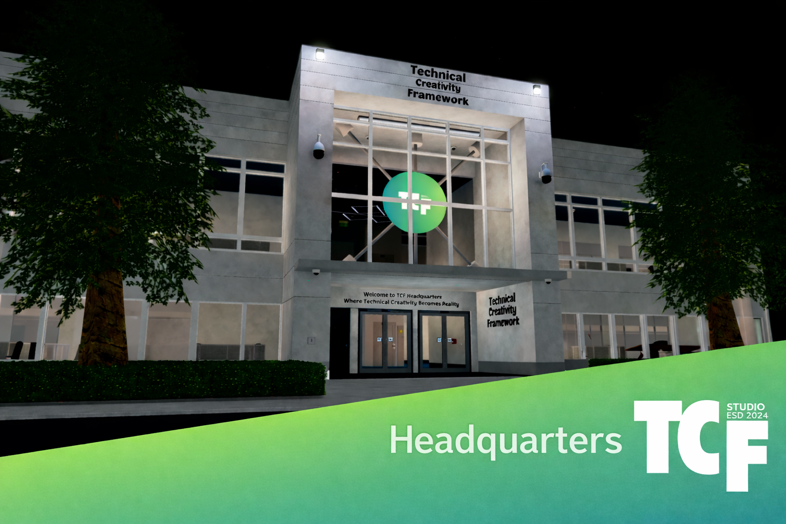
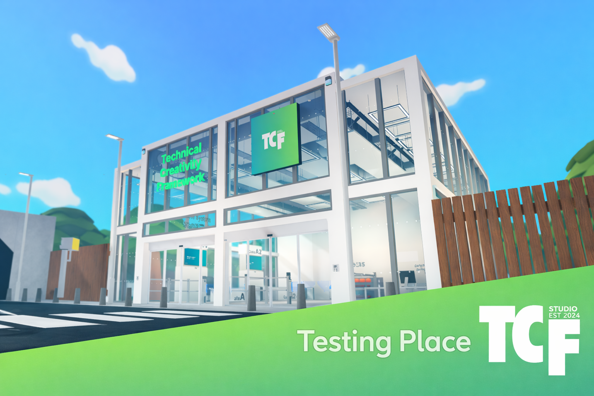
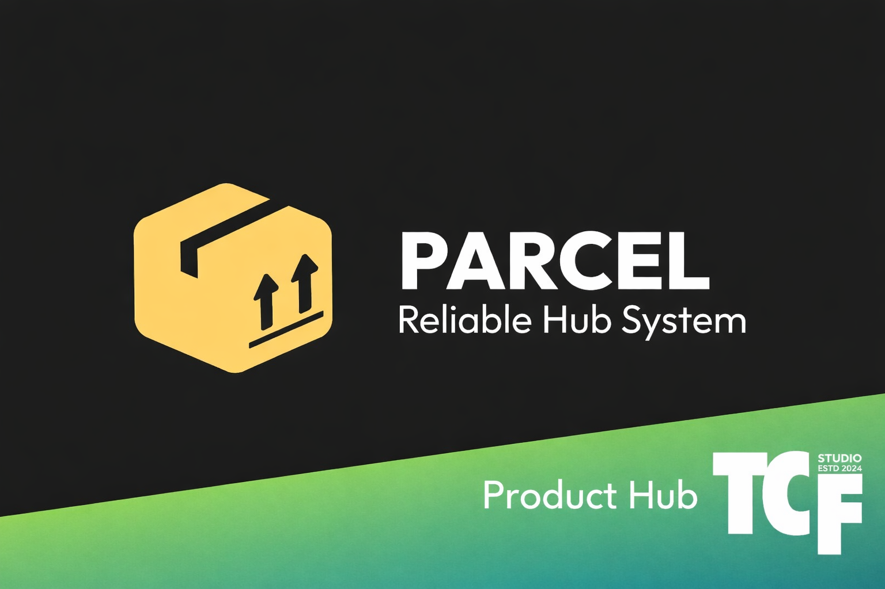
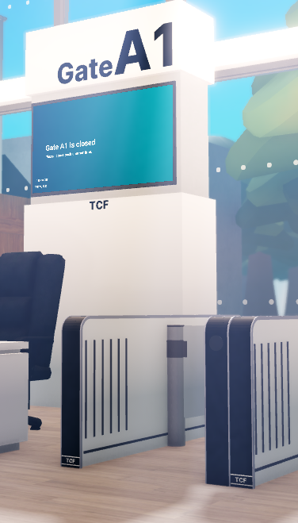

Premium Roblox identity
TCF builds cinematic spaces players remember.
Technical Creativity Framework is a Roblox tech group focused on stronger visuals, sharper presentation, and polished spaces, while specialising in Roblox Ro-Tech systems, realistic tech products, and utility builds for communities across Roblox.



Technical Creativity Framework
60+ Sales
Headquarters
Testing Place
Product Hub
Roblox Ro-Tech
Studio ESTD 2024
Technical Creativity Framework
60+ Sales
Headquarters
Testing Place
Product Hub
Roblox Ro-Tech
Studio ESTD 2024
Experiences
Three high-impact spaces, one stronger TCF ecosystem.
Each destination has a purpose: presence, iteration, and product showcase. The site presents them like a connected studio lineup instead of random links.
Flagship experience
Headquarters
Built to feel official, calm, and premium. It sets the tone for the whole brand and gives visitors a proper first impression of TCF.
Launch HeadquartersCreative lab
Testing Place
Where new ideas get shaped, tested, and refined before they become part of the public face.
Visit Testing PlaceProduct surface
Product Hub
A central place for TCF products, Ro-Tech systems, and everything the group is actively building on Roblox.
Explore Product HubRo-Tech Products
We specialise in Roblox Ro-Tech systems with 60+ sales across our lineup.
TCF focuses on Ro-Tech products for Roblox communities, with systems designed for realistic roleplay experiences, automation, access control, and smoother in-game utility.

Join TCF
Join the group, explore the places, and check out what TCF builds in Roblox.
From Headquarters and Testing Place to Ro-Tech products like Gate System, Self Checkout, Rating System, and AutoDoors, TCF is building a sharper Roblox tech identity around real products and polished spaces.